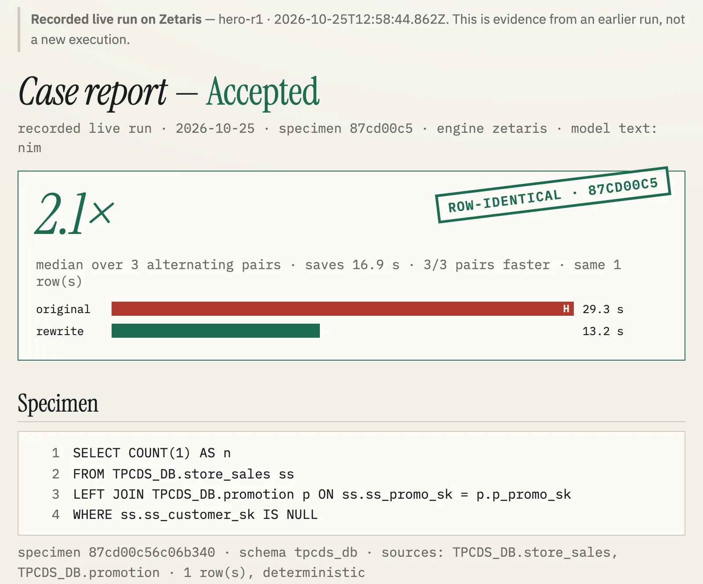
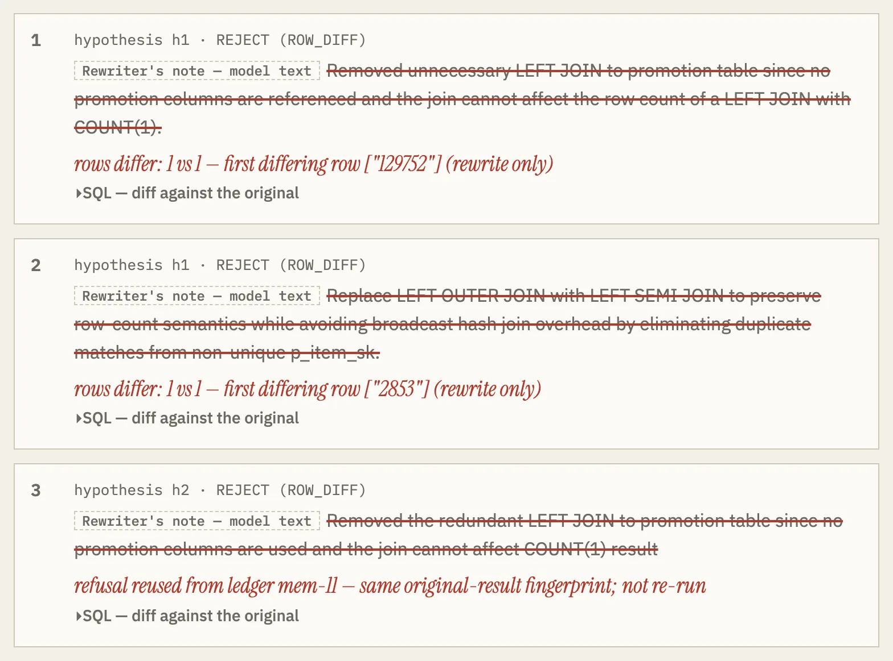

Specimen QD-2939 · recorded live on ZetarisOpen Agent Hackathon 2026 · Reasoning Architecture
Query Doctor
Same rows. Faster.
Or the doctor won't sign.
Executes the original and the rewrite on Zetaris; signs only when the rows match. Hero: 2.11× over 10 paired runs.
Case report hero-r1
accepted
Specimen · the rewrite drops the struck line
SELECT COUNT(1) AS n
FROM TPCDS_DB.store_sales ss
LEFT JOIN TPCDS_DB.promotion p ON ss.ss_promo_sk = p.p_promo_sk
WHERE ss.ss_customer_sk IS NULL
Results vs reference · per-side medians of 3 alternating pairs
originalH
29.3 srewrite13.2 s
original87cd00c5rewrite87cd00c5
ROW-IDENTICAL · 87CD00C5
Verified by Verifier — code, no model · 2.1× = median pair ratio, 3/3 pairs faster
landing + this deck
querydoc-flax.vercel.app
Query Doctor · Open Agent Hackathon 2026v0.1.0 · code b05f6f7 · 01 / 11
Specimen · the problemshape of trinodb/trino#2939
Problem · who signs off
Faster can still be wrong.
SELECT COUNT(1) AS n
FROM TPCDS_DB.store_sales ss
- LEFT JOIN TPCDS_DB.promotion p
- ON ss.ss_item_sk = p.p_item_sk WHERE ss.ss_customer_sk IS NULL
original count129,776
after the edit129,752
Reviewers see one deleted join. Users: whoever reviews a rewrite before it merges — the diff is all they see.
evidence/verify/2026-10-25T08-42-12Z · Verifier REJECT ROW_DIFFv0.1.0 · code b05f6f7 · 02 / 11
Method · four agents, one rulenames as they appear in the traces
Solution
A model proposes. Code decides.
codeVerifier
Executes both, compares rows, times pairs.
- original runs twice — deterministic?
- same columns and types
- 0 rows differ (or equal row hash)
- ≥ 1.2×, saving ≥ 1,782.9 ms, most pairs won
modelDiagnoser
Reads the plan and the join key.
unused_outer_join, node 7
modelRewriter
One rewrite per hypothesis.
drops the unused join
codeOrchestrator
Sequences, retries, remembers refusals.
1 attempt → ACCEPTED
Diagnoser + Rewriter: Nemotron 3 Ultra · Verifier + Orchestrator: TypeScriptv0.1.0 · code b05f6f7 · 03 / 11
Workflow · one case, end to endfrom ARCHITECTURE.md
Workflow · architecture
Every rewrite passes one gate.
model callcode
Paste SQLguard: one read-only statement
Verifier pre-checkoriginal runs twice · determinism lint
Plan + key factsEXPLAIN FORMATTED · pattern detector · COUNT vs COUNT(DISTINCT)
Diagnoserpattern + hypotheses
Nemotron 3 Ultra
Rewriterone rewrite per hypothesis
sees prior refusals
Verifierschema · row diff / xxhash64 · 3–5 alternating pairs
ACCEPTEDpatch for a human
PlaybookH-MEM: refusals + outcomes
Markovian chain · ≤ 3 attempts
ROW_DIFF → playbook, retry
NOT_FASTER
(no_gain) →
Diagnoser.revise
EnginesZetaris · local platform over a Java JDBC sidecar (live) | DuckDB · committed NYC TLC subset (sample, keyless) | model: Nightshift default · NIM fallback (recorded)
src/orchestrator.ts · src/agents/verifier.ts · src/reasoning/chain.ts · src/memory/playbook.tsv0.1.0 · code b05f6f7 · 04 / 11
Report · the real screennpm start → #/recorded/hero-r1
Product
The report a reviewer signs.
localhost:8000/#/recorded/hero-r1

123
- Verdict and stamp, first.
- Measured bars: original vs rewrite.
- Labelled: evidence from a recorded run.
real screen of the app · evidence from the recorded run, not a new executionv0.1.0 · code b05f6f7 · 05 / 11
Comments · the same edit on two keysrecorded/live · 2026-10-25
The moment
One edit. Two keys. Two verdicts.
Case report hero-r1
accepted
LEFT JOIN TPCDS_DB.promotion p
ON ss.ss_promo_sk = p.p_promo_sk
ON p_promo_sk300 distinctof 300 non-null
fingerprint 87cd00c5 = 87cd00c5
2.1× median pair ratio · 3/3 faster
ROW-IDENTICAL · 87CD00C5
Case report hero-trap-r1
refused
LEFT JOIN TPCDS_DB.promotion p
ON ss.ss_item_sk = p.p_item_sk
ON p_item_sk291 distinctof 293 non-null
attempt 1 fingerprint e51f9da7 ≠ 87cd00c5
first differing row 129752
REFUSED · ROW_DIFF
recorded/live/hero-r1/case.json · recorded/live/hero-trap-r1/case.json + trace.jsonl (profile_keys)v0.1.0 · code b05f6f7 · 06 / 11
Results vs referenceDEMO.md · evals/results.md · recorded/live
Evidence
Measured on the engine, not estimated.
2.1×
live verdict · 3 pairs
hero-r1 · 3/3 pairs
hero-r2 · 2.15×
fingerprint 87cd00c5
2.11×
bench, 10 alternating pairs
p50
p95red original · green rewrite 6 / 15
baseline changed rows
one model call, same Verifier, DuckDB
Query Doctor shipped: 0
ΔΔΔΔΔΔ=====····
designed queries, small N — not a rate on real workloads · one laptop, local JDBCv0.1.0 · code b05f6f7 · 07 / 11
Instruments · in one live case (hero-r1)logs/live-hero-r1.jsonl
Instruments
Zetaris runs it. Meterless remembers it.
Zetaris
11calls
- 9Verifier runs
- 1key profile
- 1
EXPLAIN FORMATTED
Meterless
3calls
- 2H-MEM open, query
- 1Markovian chunk
Nightshift: 0 live runs, mock-tested
NVIDIA Nemotron · 2 calls
counts from the recorded trace of hero-r1 · Nightshift: 16 mock-runtime testsv0.1.0 · code b05f6f7 · 08 / 11
Stack · and how it was builtREADME · Getting started
Stack
Small, tested, runs keyless.
querydoc/
├─ src/agents/ diagnoser · rewriter · verifier · patterns · profile
├─ src/verify/ canonical · diff · fingerprint · timing · order · determinism
├─ src/reasoning/ chain.ts — Markovian
├─ src/memory/ playbook.ts — H-MEM
├─ src/adapters/ nightshift · nim · llm
├─ engine/zetaris-jdbc/ QuerySidecar.java — one warm JDBC connection
├─ vendor/meterless/ upstream engines, unmodified
├─ test/ 26 files
└─ Dockerfile SAMPLE_MODE=true, no keys
286
tests, no keys needed
TypeScript · Node 22 · DuckDB sample engine
Cursor wrote scaffold d3e823c; Claude Code the rest.
docker build -t querydoc . && docker run --rm -p 8000:8000 -e SAMPLE_MODE=true querydocv0.1.0 · code b05f6f7 · 09 / 11
Comments · hero-trap-r1#/recorded/hero-trap-r1 · Attempts
What was unique
It keeps the wrong answers.
- on the pageRefused rewrites stay, struck through, with the differing row.
- in memoryA repeated refusal is read from the ledger.
- in the report"identical on the current data" — not a proof.

real screen · README Limitations: the retry loop does not reliably learn from a refusalv0.1.0 · code b05f6f7 · 10 / 11
Next · from the README roadmapquerydoc-flax.vercel.app
Future
Next: queries we didn't write.
- Queries not designed by us, baseline on Zetaris
- Re-record the hero through a live Nightshift runtime
- Zetaris MCP intake (get_slow_queries)
- Write-back of an approved rewrite
querydoc-flax.vercel.app
landing · deck · recorded runs
Verified by the Verifier.
Query Doctor · Apache-2.0 · github.com/edycutjong/querydocv0.1.0 · code b05f6f7 · 11 / 11